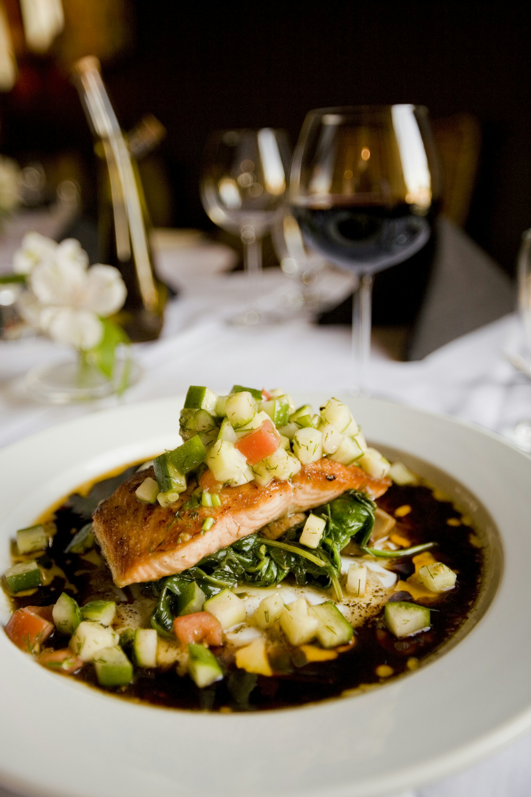
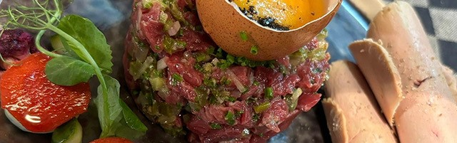
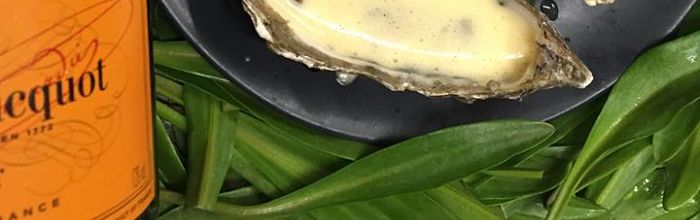
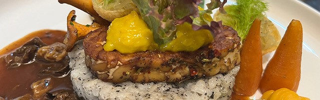
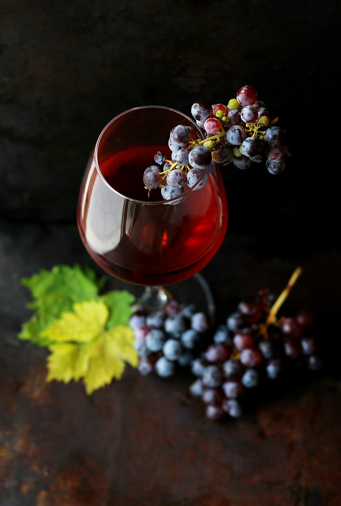

La cuisine
Een vaste à la carte-kaart en een dagelijks wisselend menu. Je kiest zelf hoeveel gangen je wilt.
Ambachtelijk Frans, op het ritme van het seizoen
Het restaurant ligt op de begane grond van de monumentale villa, tussen het stadspark en de haven van vestingstad Zaltbommel. Ook in de Lekker 2023 weer eervol beschreven.
Wat er op de kaart staat, hangt af van het aanbod van verse, regionale producten. Alle soepen, sauzen, ijs en patisserie worden in eigen keuken gemaakt. Kleine, gespecialiseerde leveranciers in Frankrijk en België leveren traditionele producten zoals kruiden, oliën en oude soorten azijn. Ook buiten de kaart om bereidt de keuken klassieke gerechten.
Zomersluiting van 27 juli tot en met 17 augustus 2026.
Luc volgde zijn opleiding aan de hotelschool Ter Duinen in Koksijde en liep stage in vooraanstaande keukens in binnen- en buitenland. Sinds 2003 staat hij hier zelf achter het fornuis.

Wat de seizoenen brengen
Voorjaar
- Lamsvlees
- Asperges
- Kreeft
- Schaal- en schelpdieren
- Oesters
Wildseizoen
- Gevogelte
- Patrijs
- Smient
- Grouse
- Ree
- Hert
- Haas
Menu's en à la carte
Kies precies de gerechten waar je zin in hebt, of laat je verrassen met het dagelijks wisselende menu. De kaart wordt elke dag samengesteld met de verse producten die binnenkomen, zoveel mogelijk biologisch en lokaal. Wat je hier leest, kan dus afwijken van de kaart van vandaag.
Gerechten onder voorbehoud, want de kaart kan dagelijks wisselen. Zin in een specifiek gerecht? Vermeld het even bij je reservering.
Vlees en gevogelte
- Terrine van wild / huisgerookte eend / brioche / chutney€ 19,50
- Terrine van ganzenlever / brioche / appel / abrikoos€ 19,50
- Steak tartaar 'haché bleu'€ 19,50
- Steak tartaar 'haché bleu' met ganzenlever€ 24,50
- Hartzwezerik / appel / dragonjus€ 19,50
- Kwartel/dragon/appel€ 19,50
Vis, schaal- en schelpdieren
- Zeeuwse creuses III (6 stuks) / frambozen / sjalot azijn€ 23,50
- Tarbot / risotto / truffel / Hollandaisesaus€ 19,50
- Kabeljauwrug/Hollandaise/zeegroenten€ 19,50
- Gevulde Vissoep/creme fraîche/brioche€ 17,50
- Gebakken coquilles/bulger/zoetzure groentjes€ 19,50
Gerechten onder voorbehoud, want de kaart kan dagelijks wisselen. Zin in een specifiek gerecht? Vermeld het even bij je reservering.
Vlees
- Château Briand / rode wijn / sjalotje / groenten /aardappel€ 35,00
- Hollandse reebok / morilles / eekhoorntjesbrood /gepofte aardappel / groenten€ 28,75
- Hartzwezerik / appel /dragonjus€ 35,00
Vis
- Noordzeetarbot / lintpasta / truffel / Hollandaisesaus€ 35,00
- Kabeljauwrug / duxelles / groenten / beurre blancsaus / gefermenteerde kool€ 29,50
- Europese kreeft / zeegroenten / kreeftenjus / dragon€ 8,00 per 100 gram
- Delice de mer / zeegroenten / jus van kreeft€ 30,00
Alle ijs en patisserie worden in eigen keuken gemaakt. Gerechten onder voorbehoud.
Desserts en kaas
- Roodfruitdessert / bergamot / parfait/ valrhonachocolade€ 12,50
- Crêpes Cerise / verse kersen / cherry Heering / vanilleparfait€ 15,00
- Lemoncurd / merinque / citrus€ 12,50
- Kaasassortiment (6) met garnituur€ 17,50
Koffie en thee
- Onbeperkt koffie-/theeservies met huisgemaakte friandises€ 7,50
Vegetarisch lunchen of dineren kan, uitsluitend als je dat bij je reservering doorgeeft.
Ook voor vegetarische gerechten werkt de keuken met een dagelijks wisselende kaart. 'La Provence' is gespecialiseerd in de ambachtelijke Franse keuken, waarin vlees (inclusief wild en gevogelte) en vis (inclusief schaal- en schelpdieren) een belangrijke plaats innemen.
Andere dieetwensen? Laat het weten bij de reservering, dan houdt de keuken er bij de voorbereiding rekening mee, bijvoorbeeld bij het broodbakken.
Reserveren met dieetwensVan het bord



Dieetwensen? Geef ze door bij het reserveren, dan houdt de keuken er rekening mee. Vegetarische gerechten worden alleen op afspraak bereid.

Een mooie, eerlijk geprijsde wijnkaart
Het accent ligt op Frankrijk, met ook wijnen uit Duitsland, Oostenrijk, Portugal, Spanje en Italië.
La Provence Favorites. Op elke tafel staat een kaart met wijnen per glas, speciaal gekozen bij de menu's en het seizoen. Alle Favorites zijn ook per fles te bestellen. Twijfel je? We adviseren je graag.
Bekijk de wijnkaart
Wild, kaarslicht en kerst
Een wildmenu op 20 en 21 november, diner at candlelight op 11 en 12 december, de kerst try-out op 18 en 19 december en het kerstdiner op 24 en 25 december. Ook voor je kerstdiner thuis kun je bij ons terecht.
Agenda
Bijzondere diners dit najaar
- 20 en 21 novemberWildmenu van vijf gangen
- 11 en 12 decemberDiner at candlelight
- 18 en 19 decemberKerst try-out
- 24 en 25 decemberKerstdiner van zes gangen
“Het is hier Frans wat de klok slaat.”Lekker500, editie 2025
Aan tafel?
Lunch dinsdag tot en met vrijdag, diner dinsdag tot en met zaterdag. Bel bij voorkeur tussen 10:00 en 12:00.